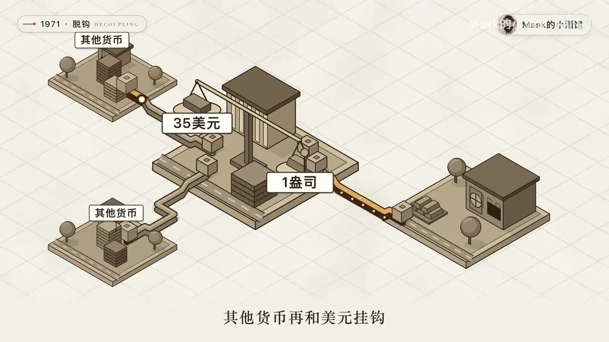

原视频 · 在线回看
点击后联网加载 B 站播放器；本地不下载整段视频。

原视频 · 在线回看
点击后联网加载 B 站播放器；本地不下载整段视频。
来源：大宗商品的超级周期要来了｜UP 主：Mask的小酒馆｜时长：13:39｜Bilibili 原视频｜阅读强度：standard
黄金、铜、石油、天然气、化肥和粮食的价格，可能会被同一轮经济力量依次推动吗？视频给出的判断是：大宗商品超级周期已经开始，原因可从三个方向理解——货币与美元、实体需求、供给扩张速度。演讲者把当下与 1970 年代、2000 年代的商品上涨阶段作比较，再推演贵金属、工业金属、能源、化工和农产品可能出现的先后次序。
这是一套宏观市场推演。文中价格、预测和供需数字均按演讲者引用的时间与口径转述；它们用于理解推演条件，不构成个人化投资建议或收益保证。
演讲者先回到 1971 年。布雷顿森林体系下，美元按每盎司黄金 35 美元兑换，其他货币再与美元挂钩；这个安排限制了美元发行。美国越战期间财政支出增加，黄金储备难以支撑更多美元。1971 年 8 月，尼克松政府关闭黄金兑换窗口，美元与黄金脱钩。视频引用的历史价格是：油价从每桶约 3 美元升至 1980 年前后的约 36 美元，黄金从每盎司 35 美元涨到 1980 年 1 月约 850 美元。演讲者把货币约束减弱视为上涨的重要背景，同时也承认这十年间出现过两次石油危机。
这段历史提供的机制是：当货币购买力下降、石油金属和农作物的供给又难以快速增加，以美元标价的商品可能变贵。油价上涨还处在两次石油危机的背景下，因此这段历史不能单由货币变化解释。
第二个例子是 2000 至 2011 年。视频把这一轮拆成三根支柱。第一是货币：互联网泡沫和“9·11”事件之后，美联储降息，2003 至 2004 年利率一度维持在 1%，次贷危机期间又降到接近零，美元指数随之走弱。第二是需求：中国加入世贸组织后进入高速工业化和城镇化阶段，盖楼、修路、建设工厂都需要钢铁、铜、铝、水泥和石油。第三是供给：大宗商品价格低迷的 1990 年代，矿业投资不足；需求在 2000 年后快速上升时，新矿的建设速度赶不上消费增长。
演讲者举例称，2008 年 7 月原油达到每桶 147 美元；铜价从 2002 年每吨约 1,500 美元升到 2011 年超过 10,000 美元，黄金也从每盎司约 250 美元升到约 1,900 美元。供给有建设周期：矿价低迷时投资减少，需求转强后也需要多年才能形成新产能，短期供需因此更容易错位。
视频认为，政府债务增加会让货币政策面临两难：削减支出或提高偿债压力，可能带来经济冲击；持续借新债又会扩大债务负担。演讲者据此推断，政府会倾向于继续发行债务和增加流动性，美元购买力因此承压。随后，他把商品视为稀缺实物资产，认为资金会流向黄金、铜、石油和粮食等品类。
债务水平高本身不能决定政策选择，也不能说明新增资金一定流入大宗商品。演讲者引用的美国债务、利息支出和美联储资产负债表数据对应录制时的口径；这条推演还依赖货币政策偏宽松、美元走弱和投资者愿意配置商品等条件。
演讲者提出的第二个当下变量是资产安全。俄罗斯央行外汇储备在俄乌冲突后遭冻结，使部分国家重新衡量将储备放在外国金融机构中的风险。视频援引的央行购金数字称，2022 至 2024 年全球央行每年净买入黄金超过 1,000 吨，2025 年约 850 吨；另引用欧洲央行报告，称 2025 年底黄金约占全球官方储备的 27%，高于美国国债和欧元的占比。演讲者据此认为，部分新兴经济体若提高黄金储备比例，可能增加官方买盘。这是“资产安全担忧持续、储备配置继续调整”的条件性推演，买入规模和时点仍取决于各国实际决策。
第三个变量是需求结构。上一轮主要由中国工业化拉动，这一轮则被视频归因于 AI 数据中心、新能源汽车、光伏、风电和电网升级。电动车、发电输电设施和数据中心配套线路都需要铜。视频引用的估计称，一个 100 兆瓦数据中心约需 4,700 吨铜，当年数据中心铜需求约 47.5 万吨；新铜矿从发现到投产平均约 17 年，全球铜矿供应增速约 1.4%，多家机构预计精炼铜会出现缺口。前两项是项目和年度需求估计，后两项涉及矿业周期与供应预测；涨价推演要成立，仍需实际建设达到预期且新矿不能及时补上供给。
视频再把货币、美元、实体需求和供给限制合并为四项条件，并据此判断新一轮周期已经具备基础。数据中心建设放缓、新矿投产快于预期、利率或美元走势改变、经济活动减弱，都会削弱这条推演中的价格压力。
在视频的次序里，贵金属最先响应金融预期。黄金和白银交易广泛，容易被投资者用来表达对通胀、美元和资产安全的判断。视频引用的黄金行情从 2022 年初每盎司约 1,800 美元开始，期间升至更高水平，也经历短时回落；演讲者提醒，历史上的上涨阶段同样出现过超过 20% 的回调。这个例子说明，即使一个人相信长期供需逻辑，价格路径仍可能剧烈波动，回调本身不能证明周期继续或结束。
第二步是工业金属。经济活动、基建、电动车和电网扩建会增加铜铝需求。铜矿开发周期长，使短期新增供给较难跟上突然增加的需求。铝则同时受成本与需求影响：视频称能源成本约占铝生产成本的四成，电价上升会抬高生产成本；新能源汽车轻量化、光伏支架、建筑门窗和航空航天也是它的需求来源。若冶炼厂受损，供应还可能短时收缩。铜、铝、锌、镍和铅并不会因此同步同幅上涨，具体差异仍看各自的库存、产能、消费用途和替代关系。
第三步是能源。工厂、运输和数据中心运转会消耗能源。视频认为，疫情前批准的油田项目投产、欧佩克逐步放松减产，使近期供应看起来较宽松；但 2020 年后上游投资减少，老油田产能释放完后，新增供应可能放慢。若需求继续增长、投资恢复仍慢，供给可能转紧。霍尔木兹海峡是另一风险变量：演讲者用冲突期间油气运输受阻、油价上涨和储备释放的案例，说明地缘事件可能迅速影响现货供应。
天然气在这套逻辑里同时承担能源和电力调峰角色。风电、光伏发电量随天气变化，低风、无日照时需要其他电源补足，天然气发电是可快速调整的方式之一。演讲者认为，新能源扩张不一定让天然气需求消失；若 LNG 设施受损、供应恢复需要数年，短期缺口可能延续。电网、储能、其他电源和 LNG 产能都会影响结果。
最后才轮到化工和农产品。石油是乙烯、丙烯等石化产品的上游原料，相关成本可以传到农药和农膜；天然气则是合成氨、尿素等氮肥的重要原料和燃料。视频称天然气占氮肥生产成本的七成以上。肥料、农药、农膜和柴油成本上升后，农户要在之后的种植季采购投入品；最终粮价还要看播种、产量和库存，因此传导晚于能源价格。
视频还对比中国与日本：它认为国内储备粮、最低收购价和进口配额会缓冲国际粮价向餐桌传导；日本则出现过超市大米价格显著上涨的阶段。这个对照强调政策与市场结构会改变终端价格，农产品最后传导也不代表所有国家的消费者会受到同样冲击。视频给出的日本米价、国际尿素和化肥指数数字，都是特定时间与市场范围的记录，需同具体统计口径一起理解。
整段推演可以压缩为：债务和货币预期影响美元与资金配置；实体产业带动金属和能源需求；矿山、油田和 LNG 项目建设周期较长，供给调整落后；能源和化工成本再传到化肥、种植成本和部分粮食价格。上一环节可能影响下一环节，但每一步都要经过需求、库存、政策、生产周期和替代供给的检验。
视频结尾把“踩中周期”说成改变财富的重要机会，同时提醒别追涨杀跌。阅读这条逻辑时，可以分别检查货币、需求和供给的证据，再看商品之间的传导时间、地区政策与回调幅度。